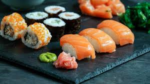
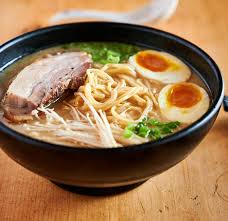
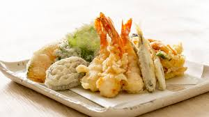
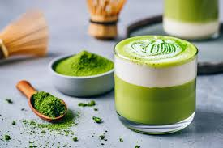
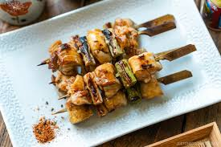
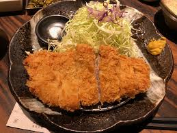
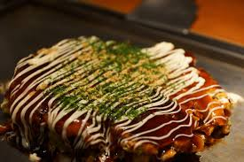
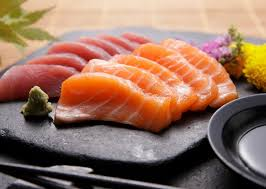
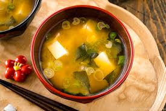
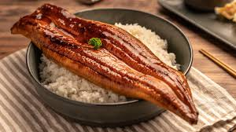

Sushi is a traditional Japanese dish of prepared vinegared rice, usually with some sugar and salt, accompanying a variety of ingredients, such as seafood, vegetables, and occasionally tropical fruits. Styles of sushi and its presentation vary widely, but the main ingredient is always rice and can include raw fish, cooked fish, and seafood.
Ramen is a Japanese noodle soup dish consisting of Chinese wheat noodles served in a meat or (occasionally) fish-based broth, often flavored with soy sauce or miso, and uses toppings such as sliced pork (chashu), nori (dried seaweed), menma, and green onions.
Tempura is a Japanese dish usually consisting of seafood or vegetables that have been battered and deep-fried. Tempura batter is traditionally made with cold water, flour, and egg yolk.
Matcha is finely ground powder of specially grown and processed green tea leaves. It is used in traditional Japanese tea ceremonies and has become a popular ingredient in many food items, including desserts like matcha ice cream, matcha cakes, and matcha-flavored chocolates.
Grilled skewered chicken pieces seasoned with salt or sauce, often served as a popular izakaya (Japanese pub) dish.
Breaded and deep-fried pork cutlet, usually served with shredded cabbage, rice, and a tangy sauce called tonkatsu sauce.
A savory pancake made with flour, eggs, shredded cabbage, and a variety of toppings such as meat, seafood, and vegetables, then drizzled with okonomiyaki sauce and mayonnaise.
Thinly sliced raw fish or seafood served as a delicacy, often accompanied by soy sauce, wasabi, and pickled ginger.
A traditional Japanese soup made with dashi (stock) and fermented soybean paste (miso), typically containing ingredients like tofu, seaweed, and green onions.
Grilled freshwater eel glazed with a sweet soy-based sauce, served over rice as a popular dish known as unagi donburi or unadon.
